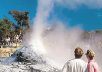

Rotorua
Rotorua is famous for its geothermal activity, and visitors will notice a strong pungent sulphur smell. Because the earth's crust beneath Rotorua is so thin, steamy geysers have popped up in many places. There are many walkways which provide views of this awesome activity.
The four main Geothermal areas in the Rotorua area are;
- Whakarewarewa Thermal Reserve, on the southern outskirts of Rotorua.
- Waimangu, off State Highway 5 between Rotorua and Taupo.
- Wai-o-tapu, 27 km south of Rotorua on SH 5 between Rotorua and Taupo.
- Hells Gate (Tikitere), 15 minutes east of Rotorua on SH30.
Other Attractions
Rotorua is a great destination if you like fishing and water sports. There are many beautiful lakes in the area - the largest being Lake Rotorua, Lake Tarawera and Lake Rotoiti. Best of all, they are all located just a few minutes from the City.